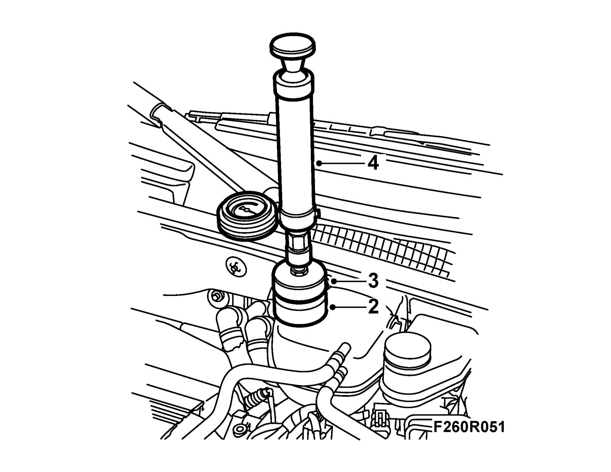

Cooling System: Testing and Inspection
Test pressurizing the cooling systemChecks
Warning
The cooling system is under pressure. Hot coolant and steam can escape.
- Open the cap slowly to release the pressure.
- Carelessness can cause eye and burn injuries
1. Remove the cap on the expansion tank.

2. Fit 83 96 160 Adapter, cooling system tester to the expansion tank.
3. Fit 30 05 469 Adapter, cooling system tester to adapter 83 96 160.
4. Connect 30 05 477 Cooling system tester.
5. Pump a pressure of approx. 1 bar.
6. Check that the pressure in the system does not drop.
7. To find any leaks in the cooling system, continue to pressurize it while inspecting for leaks.
8. Release the pressure and remove the tools.
9. Fit the cap on the expansion tank.